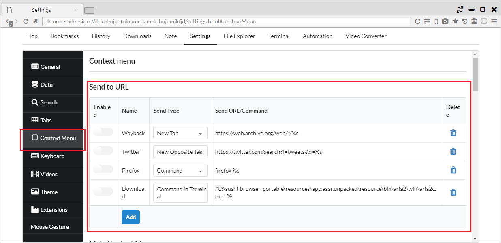
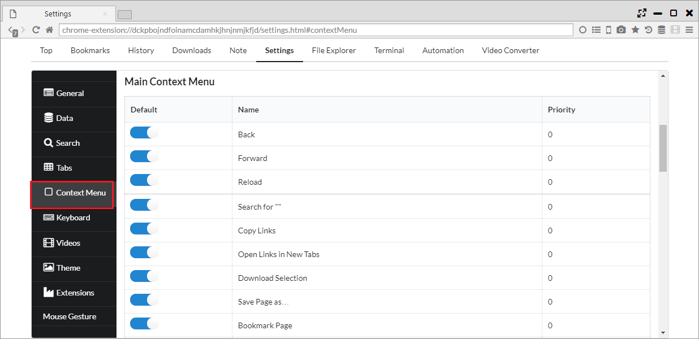

右クリックメニュー
他のブラウザで用意されている右クリックメニューに加えて、本ブラウザでは独自の様々なメニューを実装しています。
1. URLを転送
「設定 > コンテキスト メニュー > Send to URL」リンクのURLを編集して送信することや、 外部のアプリケーションに渡すことができます。
「Send Type」で送信先を決定できます。
- New Tab ・・・ 新しいタブで設定したURLを開きます。
- New Opposite Tab ・・・ 対面パネルで設定したURLを開きます。
- Command ・・・ 設定したコマンドを実行します
- Command in Terminal ・・・ 設定したコマンドをターミナル内で実行します
「Send URL/Command」で送信するURLまたはコマンドを設定することができます。%sの部分が、実際のURLに置き換わります。 
2. 右クリックメニュー設定
「設定 > コンテキスト メニュー > ページのコンテキストメニュー」から右クリックメニューへの表示有無を設定できます。
- 戻る
- 進む
- 再読み込み
- 「」を検索 ・・・ テキストを選択した場合やリンクテキストに対して、検索を行います
- Copy Links ・・・ 選択したリンクをすべてコピーします
- 選択範囲のリンクを新しいタブで開く ・・・ 選択したリンクをすべて新しいタブで開きます
- Download Selection ・・・ 選択したリンクをダウンローダに渡します
- 名前を付けてページを保存
- このページをブックマーク
- 印刷
- このページを翻訳 ・・・ 現在のページをGoogle翻訳で対面パネルに開きます
- Download All ・・・ ページ内のリンク/メディアをダウンローダに渡します
- Sync Scroll Left to Right ・・・ 左から右へ同期スクロールを行います
- Sync Scroll Right to Left ・・・ 右から左へ同期スクロールを行います
- ページのソースを表示
- 要素を検証
- 新しいタブで開く
- Open Link in Opposite Tab ・・・ リンクを対面パネルで開きます
- 新しいプライベートタブで開く
- Open Links in New Tor Tabs ・・・ リンクをTorタブで開きます
- 新しいセッションタブで開く
- 新しいウィンドウで開く
- 保存
- 名前を付けてリンクを保存
- リンクのアドレスをコピー
- リンクテキストをコピー
- Save and Play Video ・・・ リンク先のビデオを保存と同時にデフォルトのプレイヤーで再生します
- Send URL to Video Player ・・・ 外部プレイヤーにURLを送ります
- 切り取り
- コピー
- 貼り付け
- 画像を新しいタブで開く
- 画像を保存
- 画像をコピー
- 画像のアドレスをコピー
- ループ ・・・ 動画をループします
- Muted ・・・ 動画をミュートにします
- コントロールを表示
- Play Video in Popup Window ・・・ 動画をポップアップウインドウに切り出します
- Play Video in Floating Panel ・・・ 動画をフローティングパネルに切り出します
- 動画を新しいタブで開く
- 名前を付けて動画を保存...
- 動画アドレスをコピー
- オーディオを新しいタブで開く
- 名前を付けてオーディオを保存...
- オーディオ アドレスをコピー
